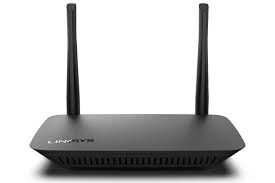
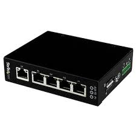
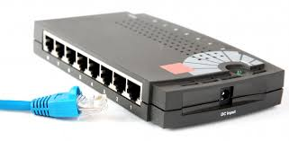
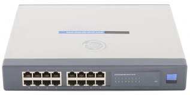

A little insights about the services that i will be offering too soon
With front-running technologies, we utilize established,industry-leading tools to design and create networking and IT infrastructure that will help maximize productivity, reduce operational costs, and mange complex consolidations.
We also have a variety of networking devices such as:
Repeater:
This is an electronic device that amplifies the signal it recieves. You can think of it as a device which receives a signal and retransmits it at a higher level or higher power so that the signal can cover longer distances, more than 100 meters for standard LAN cables.
Modem:
Modems are used to transmit digital signals over analog telephone lines. Thus, digital signals are converted by te modem into analog signals of different frequencies and transmitted to a modem at the receiving location.
Gateway:
Gateways normally work at the transport and session layers of the osi model. Gateways connect two or more autonomous networks, each with its own routing algorithms, protocols, topology, domain name service and network administration procedures and policies.
Bridge:
bridges are used to connect two or more hosts or network segments together. The basic role of bridges in network architecture is storing and forwarding frames between the two segments that the bridge connects.
Routers:
these help transmit packets to their destinations by charting a path through interconnected networking devices.
Also used to divide internal networks into two or more subnetworks.
Switch




I will also be managing the installation and implementation of the above devices at all levels thats for instance, industrial level, institution level and home level at affordable rates with 6 months guarantee after installations.
To go back to the homepage
To know more about me, you can check the about page
For more pics and videos, you can check the gallery page
For those who would want to join and be part of this portfolio, you can register here visitor's registration
 Ethan Hunt
Ethan Hunt
 +256782477250, +256773252194
+256782477250, +256773252194
 @jeinsting
@jeinsting
 einstingotimjunior22@gmail.com, einstingotimjunior25@gmail.com
einstingotimjunior22@gmail.com, einstingotimjunior25@gmail.com